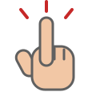
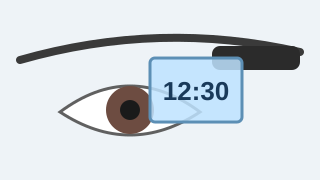
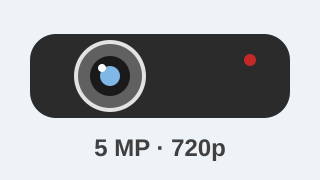
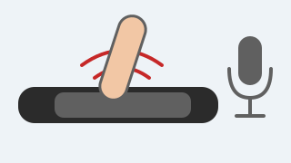
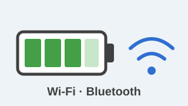

Google Glass features
Click the areas highlighted in red

Display
How the world will look
According to sources close to Google, the glasses have a small LCD or AMOLED display at the top, in front of the user’s eyes. With a camera and GPS, you can find your way around and select options by moving your head.

Camera
Shoot video and photos at any time

With Google Glass you can take photos of up to 5 megapixels and record video with 720 lines of resolution. The first videos and photos captured with the device started circulating online even before the tech specs were released.
Sensors
The sensitivity of a simple pair of glasses
Anyone who thinks a keyboard and mouse are needed to control Google Glass is very much mistaken. The device comes with several kinds of built-in sensors and microphones. To give a command, just speak or slide a finger along the side of the glasses.

Battery and Gadgets
The devices that complement Glass

According to Google itself, Glass comes with a battery that lasts a whole day. Only a few activities, such as video calls and long recordings, demand a bit more. It also comes with Wi-Fi, Bluetooth and much more.